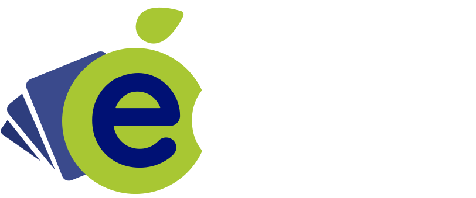

Tu facturación electrónica en Emiratos, en un solo sitio.
Consulta lo que emitiste, responde lo que recibes y administra tu conexión con nosotros. Somos tu proveedor de facturación electrónica en la red Peppol.
Proveedor de facturación electrónica·Red Peppol·GuruSoft S.A.
Decidido · 16 de septiembre
Con el registro aprobado se entra al portal, aunque falte EmaraTax. «¿Para qué le ponemos
trabas?»: el acuerdo comercial ya está firmado. El inicio lo recuerda con una tarjeta hasta que la autoridad
confirma la asociación, y entonces desaparece. En la maqueta, «Simular la vuelta» en la pantalla de la
asociación la quita; ?asociada=0 la vuelve a poner.
Abierto · 30 de septiembre
Qué más va en este espacio. En la reunión se propuso aprovechar el lienzo del inicio para los
avisos, y no solo para esta tarjeta. Quedó anotado a propósito: los avisos son de la fase 2, y abrirlo ahora
trae la pregunta de de dónde salen, quién los escribe y cómo se cierran.
Abierto · gerencia
O no dejarle entrar hasta que nos asocie. Es la otra forma de verlo, y puede que gerencia la
prefiera. Lo que no vale es mandarle credenciales que no puede usar: sería un correo fantasma.
Decidido · 2 de octubre
El inicio sí lleva atajos, como Francia. Se había decidido dejarlo solo con la imagen, porque la
botonera repetiría el menú de arriba. En la reunión se pidió traer «el cuadro de mando de Francia»; al abrir ese
portal resultó que no tiene cuadro de mando: su inicio es una imagen con cinco atajos en tarjeta. Son los mismos
cinco de aquí, con nuestros nombres. Repetir el menú deja de ser un defecto cuando es lo que la gente ya conoce
de los otros países.
Decidido
El inicio no lleva cifras. Todos los usuarios entrarían a consultarlas cada vez que abren sesión y
castigaría la base de datos sin que nadie tome una decisión con ellas. Si algún día las lleva, tendrían que venir de
una copia en caché y no de una consulta en vivo. Las cifras viven en el cuadro de mando, que es otra pantalla y se
abre solo cuando alguien quiere mirarlas.
Abierto
Queda por preguntar a gerencia si esta pantalla se hereda tal cual de Latinoamérica o si se rediseña. Si algún día
lleva datos, tendrían que venir de una copia en caché y no de una consulta en vivo.